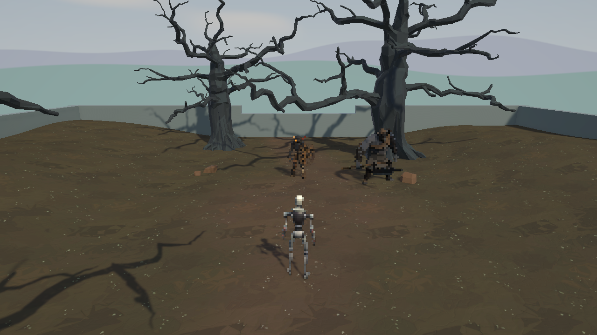
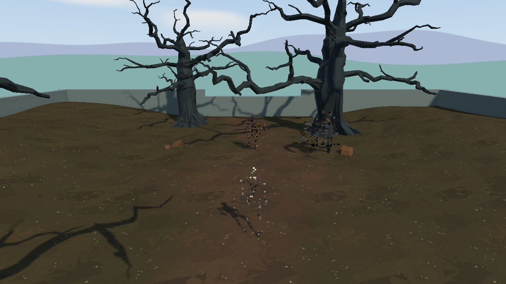

Tracefolio REPORTS & ISSUES
Tracefolio REPORTS & ISSUES캐릭터 픽셀 카메라 실행 중 반짝임과 부분 소실 수정
해결실제 Unity에서 시간에 따른 반짝임을 재현했습니다. 교체 셰이더 패스만 인스턴싱을 끈 결과 24프레임의 변동과 경고가 0이 됐습니다.
작업 결과
플레이어·몬스터의 외형이 반짝이거나 부분 소실되는 문제를 수정했습니다. 원본 Pixora는 보존하고 Fantasya 전용 렌더러에서 교체 셰이더 패스의 GPU 인스턴싱만 제한했습니다.
전 · 고정 장면의 첫 프레임

전 · 같은 장면의 마지막 프레임: 외형 부분 소실

후 · 첫 프레임

후 · 마지막 프레임: 첫 프레임과 동일

변경 내용
재현 조건
Unity 6000.0.83f1 DX11, URP 17.0.4 RenderGraph, Pixora Studio 1.0.1 / Pixel Camera 0.6.2-preview, Playground 캐릭터 3개, 4px SelectedObjects. 사용자 허락을 받아 실제 열린 원본 Unity에서 확인했습니다.
재현 순서
Playground에서 Play를 누르고 캐릭터·배경을 관찰합니다. 기존 렌더러에서는 Instancing: Unhandled property의 _PCObjectId·unity_ObjectToWorldArray·unity_WorldToObjectArray 경고가 반복됐습니다. 실제 Play Mode의 같은 카메라·배우 위치를 고정하고 각 6회 워밍업 뒤 24프레임을 렌더했습니다. 그 사이 원본 기능에서 수정 기능으로 메모리에서 전환했습니다.
기대 동작
고정된 장면에서 인접 프레임의 렌더 결과가 동일하고 캐릭터 외형이 유지됩니다.
실제 동작
기존 24프레임의 23개 인접 구간 중 14개가 달랐고 최대 915,104픽셀·최대 채널 차이 225가 발생했습니다. 관찰 구간의 인스턴싱 경고는 2,232회였습니다. 수정 후 24프레임에서는 인접 차이·경고가 모두 0이었습니다.
원인
Pixora URP의 렌더러 목록이 원본 재질의 GPU 인스턴싱 설정을 교체 셰이더 패스에도 사용했습니다. 교체 셰이더와 호환되지 않는 행렬·오브젝트 ID가 정의되지 않았다는 실제 경고가 발생했습니다. 같은 장면에서 이 패스의 enableInstancing만 false로 바꿔 경고와 시간적 변동이 함께 사라지는 것을 확인했습니다. 앞선 단일 프레임 OFF/ON 비교는 시간에 따른 문제를 검증하지 못했으며, 당시 경고를 미확인으로 보류했던 판단 범위를 이번 근거로 정정합니다.
적용 내용
새 프로젝트 전용 확장 Assets/Scripts/InGame/Rendering/CharacterPixelRendererFeature.cs는 Pixora 0.6.2-preview URP 통합의 렌더 구조를 유지하고 아래 목록 생성에서 교체 셰이더의 인스턴싱만 끕니다. 공급 원본 파일은 해시가 동일합니다. 전용 어셈블리를 분리하고 CharacterPixelRenderer.asset의 기능 참조와 최초 구성 메뉴를 새 클래스로 연결했습니다. 일반 색상 렌더와 캐릭터 프리팹 표식·픽셀 크기는 유지했습니다.
flowchart TD
A[렌더러 목록 생성] --> B{교체 셰이더 사용?}
B -->|메타데이터·법선| C[GPU 인스턴싱 끄기]
C --> D[교체 셰이더 지정]
B -->|일반 색상| E[기존 인스턴싱 설정 유지]
D --> F[카메라 컬링과 레이어 필터로 목록 생성]
E --> F
핵심 변경 메서드 전체:
RendererListHandle List(RenderGraph graph, ContextContainer frame, int mask, bool transparent, Shader replacement = null, uint renderingMask = uint.MaxValue)
{
var rendering = frame.Get<UniversalRenderingData>(); var camera = frame.Get<UniversalCameraData>(); var light = frame.Get<UniversalLightData>();
var drawing = RenderingUtils.CreateDrawingSettings(tags, rendering, camera, light, transparent ? SortingCriteria.CommonTransparent : camera.defaultOpaqueSortFlags);
if (replacement != null)
{
drawing.enableInstancing = false;
drawing.overrideShader = replacement;
drawing.overrideShaderPassIndex = 0;
}
return graph.CreateRendererList(new RendererListParams(rendering.cullResults, drawing, new FilteringSettings(transparent ? RenderQueueRange.transparent : RenderQueueRange.opaque, mask, renderingMask)));
}
이번 확장은 Pixora의 공개 타입·내부 렌더 구조와 URP 17에 직접 의존합니다. SampleProjectForUnity의 범용 유틸 후보는 없고 모체·턴룸 원본은 수정하지 않았습니다. 독립 외부 제품의 복사 영역은 원본 형식을 보존하고 변경 메서드에는 모체 주석·조건문 기준을 적용했습니다.
검증
컴퓨터 유즈로 실제 Unity에서 기존 Play와 수정 후 Play를 실행했습니다. 임시 관찰 도구는 1280×720 실제 URP 카메라 출력을 직접 저장했고, 같은 플레이의 카메라·배우 위치에서 Time.timeScale=0 및 제어·Animator만 메모리에서 중지했습니다. 씬에 저장하지 않았습니다.
| 관찰 | 기존 | 수정 |
|---|---|---|
| 기록 프레임 | 24 | 24 |
| 변동 인접 구간 / 23 | 14 | 0 |
| 최대 변경 픽셀 | 915104 | 0 |
| 경고 | 2232 | 0 |
설정에 영구 연결하고 임시 관찰 코드를 제거한 후, 00:48:16~00:50:12 KST 자연 Play에서 몬스터 이동·추격·공격과 플레이어 사망 장면을 관찰했습니다. 인스턴싱 경고 0이며 픽셀 외형이 유지됐습니다. Unity 창은 보존하고 Play는 종료했습니다. 단위 테스트나 회귀 테스트 스위트는 추가·실행하지 않았습니다.
대화 기록: 사용자 “실행하면 뭔가 반짝반짝거려 한번 확인해볼래? 컴퓨터 유즈 써도 됨” → AI가 실제 창에서 실행 후 연속 프레임 비교를 안내 → 재현 수치와 원인·수정 결과를 안내했습니다. 정확한 발언 시각은 미기록이며 실행 근거의 시각을 따릅니다. 썸네일 후보는 실제 after-first.png이며 별도 이미지 편집 없이 원본 PNG를 보존했습니다.
2026-11-12 사용자 승인: “이번 수정 자료 공개·main 반영·푸시·배포 승인”. 이 승인으로 실제 전후 4프레임·핵심 렌더 함수·경고와 변동 수치·원본 보존 근거를 중앙 아카이브에 게시합니다.
남은 사항
수정 전부터 Play 진입 시 존재한 Unity 내부 fidA != fidB assertion 3건은 남아 있으며 원인 미확인입니다. 이번 반짝임의 인스턴싱 경고와 구분합니다. 교체 패스의 드로 콜 증가량·GPU 성능, 다른 GPU·모바일 빌드는 미확인입니다. 최초 보고의 배경 단일 프레임 비교를 시간적 안정성 검증으로 일반화하지 않습니다. 목록 카드 썸네일은 아카이브 기능 제한으로 미확인입니다. 이번 근거는 기존 실제 실행·전후 대조 지침으로 충분하므로 지침 추가 없음입니다. 게임 저장소 커밋·푸시는 별도로 하지 않았습니다.
작업 시간
- 제안 시간: 2026-11-12 00:41:26 KST 시작, 제안 20~40분
- 실제로 완료된 시간: 로컬 구현·컴파일·실제 실행·문서 완료: 14분 3초, 2026-11-12 00:55:29 KST. 승인 후 공개 게시: 2026-11-12 01:14:23 KST 시작, 배포·외부 확인 진행 중입니다.
- XERJ: 미사용 — 사용자 지침에 따라 rg·원본 소스·실제 Unity Editor.log·카메라 PNG·컴퓨터 유즈로 확인했습니다.